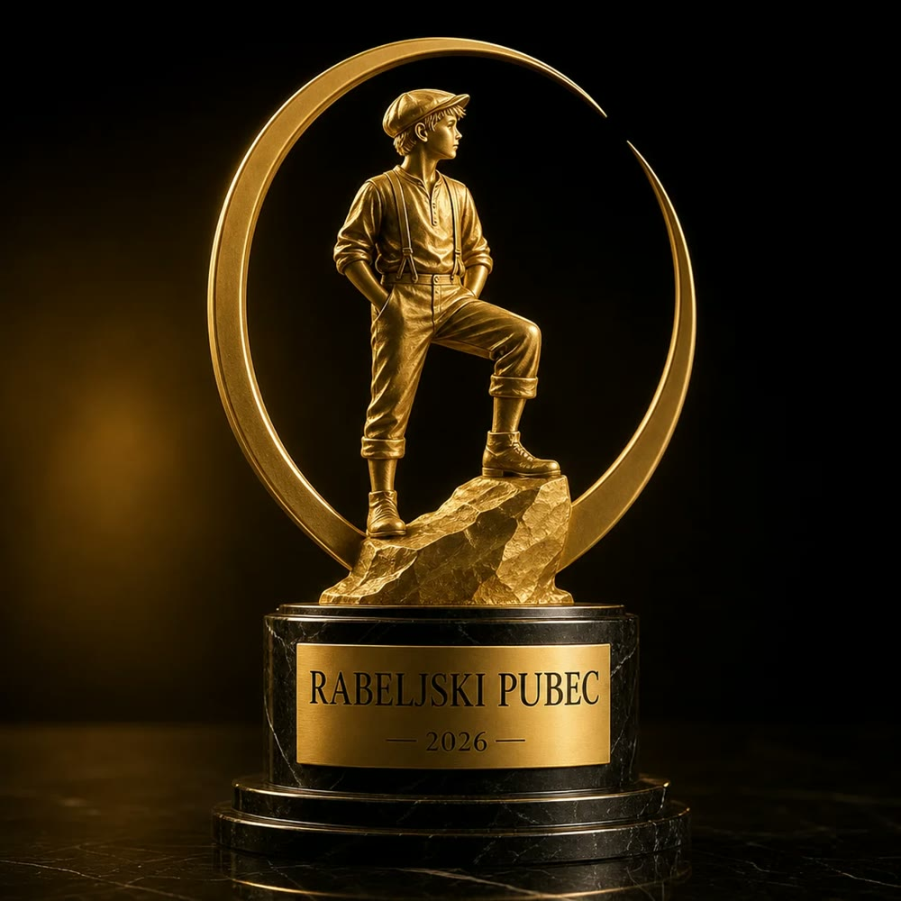
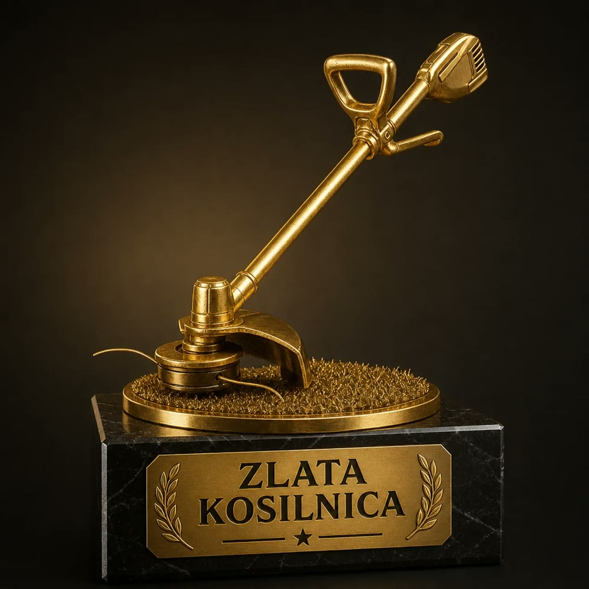

Podelitev · Rabeljski pubec 2026
Tjan Kolednik je spet Rabeljski pubec
Tjan Kolednik je dobitnik nagrade Rabeljski pubec 2026. To pomeni, da je zmagal že drugo leto zapored. Z 69 glasovi je za las, natanko za dva glasa, premagal drugouvrščenega Lana Breznika.
- Ime
- Tjan Kolednik
- Vzdevki
- Kolke, Panter, Črni in po novem Kosec
- Nagrada
- Rabeljski pubec 2026, drugič zapored
- Glasovi
- 69, dva več od Lana Breznika
- Ekipa
- Slovenske železnice, tekmovalno košenje
Nekateri zmagajo enkrat in izginejo. Tjan Kolednik ni tak. Po lanskem naslovu je letos znova osvojil nagrado Rabeljski pubec in s tem dokazal, da prva zmaga ni bila sreča, ampak sistem. Med prijatelji ga poznajo kot Kolketa, Panterja ali Črnega. Od letošnjega poletja pa ima še en vzdevek, ki si ga je prislužil z znojem in bencinom: Kosec.
Dve trofeji, ena sezona


Poletje, ko je Panter postal Kosec
Poleti je Tjan tekmovalno kosil travo za ekipo Slovenskih železnic. Nastopal je v štirih posamičnih disciplinah: košnji s flaksarco v hrib, slalomu s flaksarco, hitrostnem košenju s flaksarco in kosilniški kombinaciji. Poleg tega je bil pomemben član ekipe v štafetnih hitrostnih košnjah, kjer je po besedah soigralcev »vedno predal flaksarco s polnim rezervoarjem in nasmehom«.
Za Slovenske železnice je prikosil številne nagrade. Na koncu sezone je dobil še Zlato kosilnico, nagrado za skupno zmago v kosilniški sezoni 2026.
| Disciplina | Uvrstitev |
|---|---|
| Košnja s flaksarco v hrib | 1. mesto |
| Flaksarca slalom | 1. mesto |
| Hitrostno košenje s flaksarco | 2. mesto |
| Kosilniška kombinacija | 1. mesto |
| Štafetna hitrostna košnja (ekipno) | 1. mesto |
| Skupno, sezona 2026 | Zlata kosilnica |
Prav ta posamična predstava je bila po mnenju žirije ključna tudi za letošnji naslov Rabeljskega pubeca. Kdor pokosi hrib v rekordnem času, je očitno sposoben tudi česa drugega.
Tesno kot še nikoli
Letošnje glasovanje je bilo najbolj napeto v zgodovini nagrade. Lan Breznik je vodil skoraj do konca, a zadnji glasovi so prinesli preobrat. Razlika: dva glasa.
Dva glasa. Za Kosca je to razlika enega zamaha s flaksarco.
Zmagovalni govor
»Najprej hvala vsem, ki ste glasovali. Vem, da je bilo tesno, in vem, da je Lan odličen konkurent. Ampak to nagrado sem si prislužil. Delal sem trdo. Vstajal sem ob petih, kosil hribe, ki jih nihče ni hotel, in trenirali smo štafete, ko so drugi že spali.
Ponosen sem. Res. Ta nagrada mi pomeni največ od vsega, kar sem kdaj dobil. Ker ni samo moja. Je od vseh, ki so verjeli, da je fant s flaksarco lahko pubec leta. Dvakrat.
Doma jo bom postavil na polico, zraven Zlate kosilnice, ki sem jo dobil za zmago v kosilniški sezoni 2026. Tam bosta stali skupaj, kot opomnik, da se trdo delo vedno izplača. In da trava vedno spet zraste.«
Tjan Kolednik, Rabeljski pubec 2026Kaj pravijo drugi
»Kolke je edini, ki na flaksarci vozi slalom bolj natančno kot jaz z avtom.«
Soigralec iz štafete
»Panter je bil vedno hiter. Zdaj je hiter in pokošen.«
Prijatelj iz zadnje vrste
»Ko je prišel na trening v kombinezonu in kapi s panterjem, smo vedeli, da bo sezona njegova.«
Vodja ekipe
Podjetniška lekcija
Kot podjetniški medij v Tjanovi zgodbi vidimo jasen poslovni model. Specializacija v nišni panogi, močna osebna znamka s štirimi vzdevki in ponavljajoči se prihodki v obliki trofej. Ko konkurenca še išče svoj trg, Kosec že kosi naslednjega. Tretji zaporedni naslov? Na Zadnji vrsti stavimo, da je samo vprašanje časa.
Čestitaj Koscu!
Izberi svojo čestitko. Pravo mu napiši v skupino letnika.
Moja čestitka
Satira. Nagrade, glasovi, uvrstitve in govor so izmišljeni za zabavo. Trava pa je bila res pokošena.